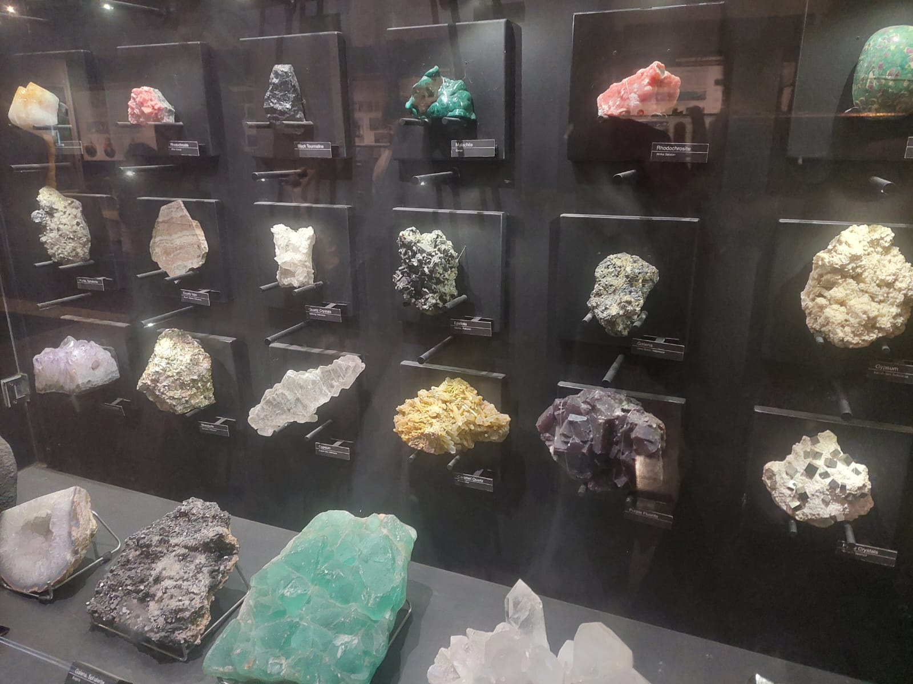

Mengunjungi Museum Geologi
Pada tanggal 12 September, saya mengunjungi Museum Geologi untuk melihat berbagai macam koleksi yang ada di dalamnya. Di sana, saya melihat berbagai jenis batuan, seperti batuan beku, batuan sedimen, dan batuan metamorf. Setiap batuan memiliki bentuk, warna, tekstur, dan proses pembentukan yang berbeda-beda. Selain itu, saya juga melihat berbagai jenis mineral, fosil hewan purba, serta fosil tumbuhan yang menunjukkan kehidupan pada zaman dahulu. Museum Geologi juga menampilkan koleksi yang berkaitan dengan sejarah terbentuknya bumi, aktivitas gunung berapi, gempa bumi, dan kekayaan sumber daya alam Indonesia. Berbagai koleksi tersebut disertai dengan informasi yang menjelaskan asal-usul dan karakteristiknya. Selama berkunjung, saya mengamati koleksi yang dipamerkan dan membaca informasi yang tersedia untuk mengetahui lebih banyak tentang batuan, mineral, fosil, serta kondisi geologi di Indonesia.